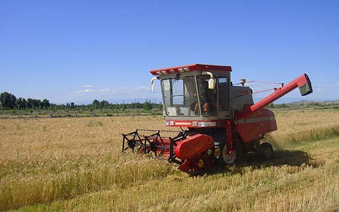

如今，城镇人口已经超过了农村人口，加之大多数农村的年轻劳动力都转移到城市，很多农村面临着劳动力不足、种田成本上升、耕地抛荒严重的现象。尤其在南方的非平原地区，这一现象更加严重。另外，新一代的年轻人大多不会种田，也无心种田，只能期待农业机械化时代的到来。
农业服务兴起带来新机会
就笔者在农村调查走访的情况来看，以农民合作社、家庭农场、种养大户等为主体的新型农村经营主体正在兴起，农业生产的专业化、集约化、机械化正成为新潮流。其中，就兴起了一种专门提供从播种、插秧到收割、烘干等全包干的一条龙服务，农业服务市场方兴未艾。
然而，这些新兴的农村经营主体与农业服务依旧带有浓厚的传统属性，并且区域性与季节性很强，大多属于集中作业模式，资源闲置情况严重。其他提供农业服务的闲散个体户更是如此。
无论是代耕代种还是统防统治的农业服务，农机手与飞防手们都面临着订单量不足或者找订单很辛苦的窘境。因为跨区服务的信息不对称，以及契约精神的缺失，丢单的情况也十分常见。
“滴滴农机”让种田更轻松
在“互联网+”的大趋势下，哪里有痛点哪里就有会互联网人创业的机会。于是我们看到，近期有两家专注于“滴滴种田”模式的创业企业先后获得了融资。这两家公司一家是农田管家，另一家是帮农忙。
农田管家成立于2016年2月，是农业互联网综合服务的提供商，主要面向农户和植保无人机飞手，为其搭建交易平台。其模式类似滴滴，农户通过平台发布作业需求，飞手通过农田管家飞手端App接单，为农户提供无人机植保服务。
帮农忙成立于2016年6月，目前主要服务于江苏市场，累计订单70余个，共计36万亩，本月预计流水200万元，合作的村级经销商1000余家。除了推出的收割、植保项目外，明年还会覆盖播种和插秧业务，成为一站式农机服务平台。
不难发现，农田管家与帮农忙都属于农机撮合平台，但是帮农忙更加注重线下经纪人体系的建设。这一新模式的出现，有利于消除农机手与用户之间信息不对称的鸿沟，并且能够有效降低生产成本，提高种田效率，真正做到让种田更轻松。
“互联网+农业”尚处于初级阶段
目前来说，整个互联网+农业行动计划仍处于探索阶段，类似农田管家与帮农忙的线上农机撮合平台也处于发展初期，目前仅仅偏居一隅。对于这类撮合型平台而言，如果服务范围、服务面积与订单量在一定的数值范围之内，平台效应将无法显现，规模经济也无法实现，这和滴滴打车发展模式类似。
但是，农机服务与打车服务还有一个根本性的不同，那就是农机服务需求的季节性问题。某一地区内的农机需求都是在某一个集中时段凸显出来，这会导致农机服务供不应求的情况发生，这时候跨区域的农机调度需求会成为可能。
另外，我国国土面积地域辽阔，东西与南北的跨度极大，对于农机来说能够保证4-11月份都有活干。所以，针对各地区农机数量分布不均衡以及集中作业的情况，农机的跨区调度服务十分有必要。这对在线农机撮合平台的服务范围和服务能力会提出更高的要求，也是平台能否实现盈利的重要一步。
毫无疑问，滴滴种田的互联网模式能够助力农业现代化的转型升级，具有较大的社会价值。但是要对平台产生经济价值的话，就必须覆盖更广的服务范围，拥有更强的服务能力，从规模优势中获得规模经济。现在仅仅是跑马圈地阶段，真正的战斗还远未打响。
- 推荐图文
- 推荐人物
- 推荐企业